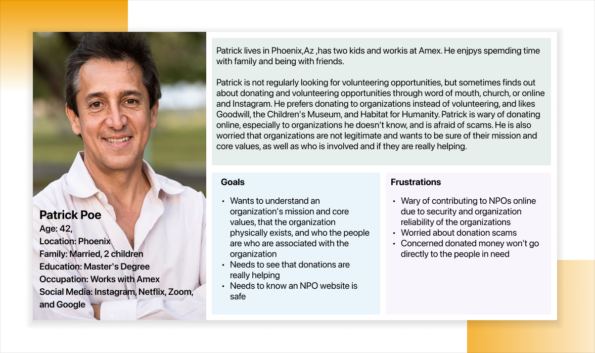
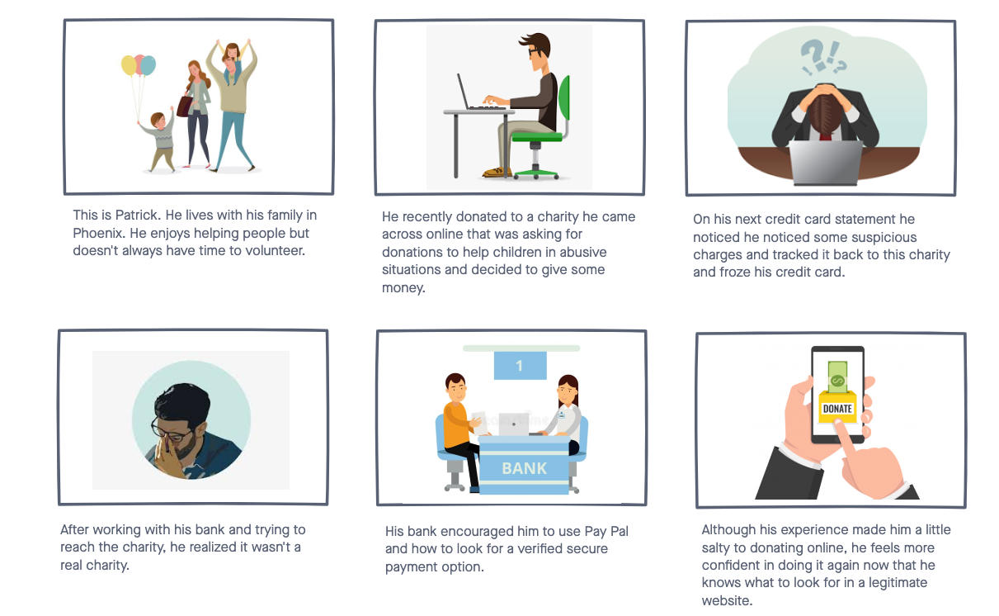
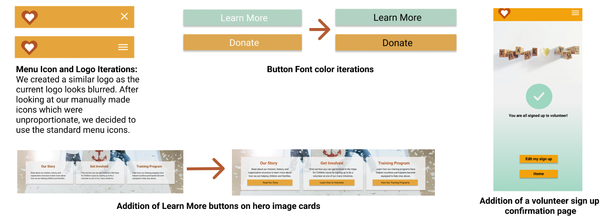

Project Description
Hope for Children is a certified charity, serving residents throughout all fifty states and the District of Columbia, mainly providing training and emergency services and contacts to help end child abuse and abuse to others.Based on the data gathered from the design thinking user-centric analysis, our team redesigned the navigation, layout, and UI to better convey the purpose and raise awareness and money to protect children from domestic violence and sexual assault.
My Role:
Team Members:
Tools:
The Problem
The current website is unclear in its goal, outdated in its aesthetics, and had less clarity and organization with the information. As a result, users struggled to find the information they need to have and trust the organization to dedicate more resources to the cause.
The Solution
Our goal was to redesign the Hope for Children website to convey their valuable mission and activities in a more clear, concise, and enticing manner in order to motivate individuals to donate, volunteer, or spread the word about Hope for Children initiatives.
The Process
Click To Hide1. Empathize
Knowing the Users
Our team gathered qualitative data from 5 user interviews and website testing. Quantitative data was also gathered through a survey sent out via email and social media over a period of 2 days. By speaking with interviewees and gathering participant responses through our survey, we were able to understand their pain points and goals related to non-profit efforts, as well as what would motivate them to volunteer, donate, or otherwise become informed or involved in different organizations.
Key intakes directly from the users:

Usability test of the current website
Using the same interviewees, we then proceeded by instructing them to test the usability of the current website. The goal of our usability test was to gather as much information and feedback to understand how our real users interacted with the product and understand their specific pain points related to the current navigation, layout and aesthetic of the website.
2. Define
With the pain points identified, we then reviewed and revised our persona based on the data collected and reframed those pain points as possible opportunities. Our persona is Patrick Poe, who is a busy family man. Patrick is not regularly looking for volunteering opportunities and prefers donating instead of volunteering. However, he is wary of donating online as he is worried about organizations not being legitimate. He is also not sure if the money is going directly to the people in need. We then used those pain points to determine user insights.
User Insight
Our user, Patrick Poe, is not very inclined to actively contribute to causes and prefers to donate money. However, he is also wary of donating online unless he has first hand knowledge of the organization’s work and is certain its mission and causes are legitimate — preferably he would like to see this with his own eyes. He mostly finds out about causes by word of mouth and needs to know he can trust an organization and platform in order to dedicate more resources to a cause. Overall, he lacks incentives to become more actively involved in NPOs.
Problem Statement
Our user is wary of unknown non-profit organizations and, though he sometimes donates to select causes, is overall unlikely to volunteer his time. Currently, he does not feel he can trust organizations and their online platforms and is hesitant to dedicate more resources to causes.
3. Ideate
Storyboard
As we started brainstorming more, we made a visual storyboard to study how our user can trust and donate confidently using the website. In the storyboard, Patrick has been scammed before, while donating. But with some credible education about looking for accredited organizations, Patrick feels comfortable donating again.
Information Architecture

Later, as we discussed and tested more on how to improve this website, we first began with I like, I wish, What if? from the data collected. We then voted and rated and came up with our most relevant features like: a volunteer profile and a clear place to donate using our prioritization matrix. Three new features were identified: Volunteer Profiles, Donate By Category & Success Stories.

Card Sorting

The next step was to simplify the navigation system so that users can easily navigate to the crucial parts of the website. We used Card Sorting technique to generate the Information Architecture.Based on the information gathered during research and persona phase, we were able to decide the main categories. We iterated more than 7 times and finally agreed on the 8th iteration.
Site Map

User Flow

Mapping the basic flow helped us understand the path the users will take to complete the goal in the most efficient way.
Style Tile

While choosing the design, we were cautious as we wanted it to be simple yet youthful, and resonate with a hopeful and uplifting feel. We found this specific color palette to be very calming, positive, encouraging and brought all the elements of innocence. From here, we later developed the UI Style Guide by taking our diverse wireframe elements and putting them into formats that were consistent with spacing, color, font, and overall style.
4. Prototype
Wireframe Sketches

Now that we have got an idea of different pages and what they should include, using the user flow as the guide we drew out some wireframe sketches, mainly focused on the key critical content/features pages and created low fi prototypes.
Each of us decided to work on different parts of the user flow section. My role was to add a new volunteer section because it added transparency and increased motivation and trust as users could see the real picture and how others are visibly involved. With a couple of ideas flowing into my mind based on the insights received from the user interviews and paper sketches, I immediately started my design process for the following screens.
- General Volunteer page including info about different volunteer opportunities, “meet our volunteers” and “upcoming events”.
- An overlay card showing info of the selected volunteer.
- Sign Up Page
- Sign Up Confirmation Page
- Sign In Page
- Profile Page
- Profile confirmation page
- Low Fi & Mid Wireframes
We then did some tests based on our user flow to find out if our usability was good and if users could understand the flow. Based on the data received we started creating low fi wireframes. Below is the progression of some of the main screens from low fi to mid fi.

5. Test
Hi-Fidelity Usability Testing
Though it never came up as a usability issue in any of the tests, I realized it is not a good practice to extend a page if not required. Based on that, I changed the layout of some of the volunteer web pages, and it also helped to achieve a better look and feel that I was looking for.
AB Testing

Lastly, we did an A/B to determine the preference between two hero images. We were interested in knowing how users reacted to specific images and which image they were able to connect more.There was no notable difference between the two, but most testers’ preference was of the image of the family. With that final iteration, we were able to conclude and finish the last step of the project.
Final Design

The updated and iterated hifi prototype now provides better and quick access to the web page’s newly added relevant contents and lets users see true success stories, volunteer pages, and create an account. Our prototype also scales up to the desktop in a responsive manner.

Our homepage provides direct access to our main features: About Us / Volunteer section / Success Stories / Donation.
The menu system was designed to be as straightforward as possible. Each page includes our volunteer sign in and donate page — (to consistently emphasize ways for our user to get involved).
Summary
Redesigning this webpage has been both challenging and rewarding. Our overall goal with the redesign was to present a helpful, uplifting feel throughout and make resources easy to find. It was clear from the start that the major challenge would be to make the website credible and trustable in order to motivate users to donate and volunteer. I believe we successfully made the web page intuitive and engaging from both users’ and organization’s perspectives by redesigning, adding, and enhancing the new features.
As I continue with my learnings and gain more experience in the UX field, I would like to revisit this project and add a few things.
Invest more time in research about specific features
More user testing & iterations to perfect the page
Make the pages more interactive (Animations, Changes in actions taken, etc)